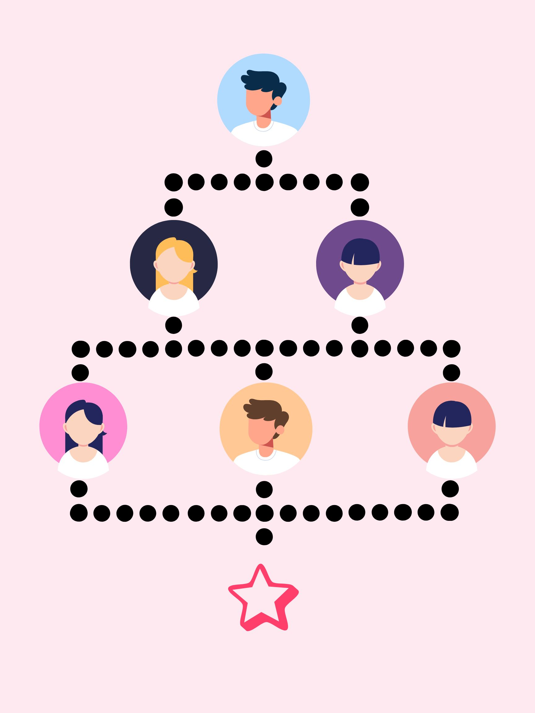

¿Qué es?
En la Industria 4.0, la integración vertical es cuando una empresa conecta digitalmente todos sus procesos internos, desde la producción automatizada hasta la entrega inteligente al cliente.
Esto incluye sensores, robots, plataformas digitales, inteligencia artificial, y todo funcionando en tiempo real y de forma coordinada.
Ventajas
- Mayor control sobre la calidad: Al usar sensores, IA y monitoreo en tiempo real, se detectan errores en producción al instante y se asegura un alto nivel de calidad.
- Menores costos a largo plazo: Aunque la tecnología es cara al inicio, automatizar procesos y reducir errores humanos ahorra dinero con el tiempo.
- Menor dependencia de terceros: Al controlar toda la cadena con sus propios sistemas tecnológicos, la empresa no depende de proveedores o distribuidores externos.
Desentajas
- Requiere mucha inversión en tecnología: Se necesita comprar maquinaria automatizada, sensores, software, servidores y capacitar al personal.
- Es más difícil de manejar: Coordinar todos los sistemas digitales, plataformas, redes, ciberseguridad y datos requiere personal especializado y mucho control.
